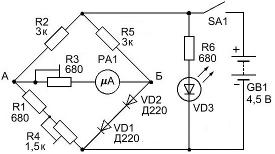
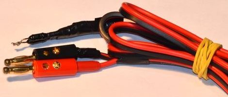

Электронный термометр
Термометр выполнен по мостовой схеме, где термочувствительным элементом являются, включенные последовательно, диоды VD1 и VD2. Когда мост уравновешен напряжение между точками А и Б равно нулю, следовательно микроамперметр PA1 покажет ноль. При повышении температуры, падение напряжения на диодах VD1 и VD2 уменьшается, баланс нарушается, а микроамперметр покажет наличие тока в цепи.

Рис. 1 - Cхема электрическая принципиальная термометра
Таблица 1
| Обозначение | Тип | Номинал | Количество | Примечание |
|---|---|---|---|---|
| GB1 | Гальванический элемент | 4,5 В | 1 | |
| PA1 | Микроамперметр | 100 мкА | 1 | ток полного отклонения 50-200 мкА |
| R1, R6 | Резистор постоянный | 680 Ом / 0,25 Вт | 2 | МЛТ-0,25, МЛТ-0,125 |
| R2, R5 | Резистор постоянный | 3 кОм / 0,25 Вт | 1 | МЛТ-0,25, МЛТ-0,125 |
| R3 | Резистор подстроечный | 680 Ом | 1 | СП3-39А |
| R4 | Резистор подстроечный | 1,5 кОм | 1 | СП3-39А |
| SA1 | Выключатель | 1 | ||
| VD1, VD2 | Диод выпрямительный | Д220 | 2 | КД102, КД103, КД104, Д226 |
| VD3 | Светодиод | АЛ307 | 1 |
Недостаток данной конструкции - требуется периодическая калибровка. Для устранения данного недостатка можно использовать переменные резисторы с выводом их ручек на переднюю панель прибора. Светодиод VD3 служит для индикации включения термометра, он также может быть любым, например мигающим. Желательно, чтобы светодиод был маломощным и не расходовал заряд батареи в пустую.
Собранный прибор требует калибровки. При отключенном микроамперметре PA1 замеряют напряжение между точками А и Б, оно должно быть около 1,0-1,2 В. Если напряжение составляет 4,5 В. то необходимо поменять полярность включения диодов VD1 и VD2. Если напряжение между точками А и Б невелико, то необходимого значения добиваемся регулировкой резистора R4. Затем устанавливаем минимальное сопротивление для резистора R3 и включаем обратно в схему микроамперметр PA1. Резистором R4 добиваемся, чтобы прибор показывал примерно 20 мкА (это соответствует комнатной температуре в 20°С). Если датчик зажать в пальцах, то показания должны возрасти примерно до 30-35 мкА (примерно температура человеческого тела).

Рис. 2 - Щупы электронного термометра
Прибор калибруется в начале и конце шкалы. Сначала датчик опускают в сосуд, наполненный водой с тающим льдом, как известно температура тающего льда равна 0°С. При этом надо перемешивать воду со льдом, так чтобы температура в сосуде была везде одинакова. Подстройкой резистора R4 устанавливаем на микроамперметре 0. Затем берем сосуд с водой температурой около 40°С, температуру воды надо контролировать при помощи ртутного термометра (подойдет обычный медицинский термометр).
Соответственно погружаем датчик в теплую воду и подстройкой резистора R3 добиваемся, чтобы показания микроамперметра совпали с показаниями ртутного термометра. Таким образом, получаем термометр для температурного диапазона 0-50°С.
Если нет возможности использовать ртутный термометр, то в качестве второй калибровочной точки можно использовать кипящую воду, как известно при нормальном атмосферном давлении температура кипения воду 100°С. Тогда температурный диапазон термометра будет 0-100°С.